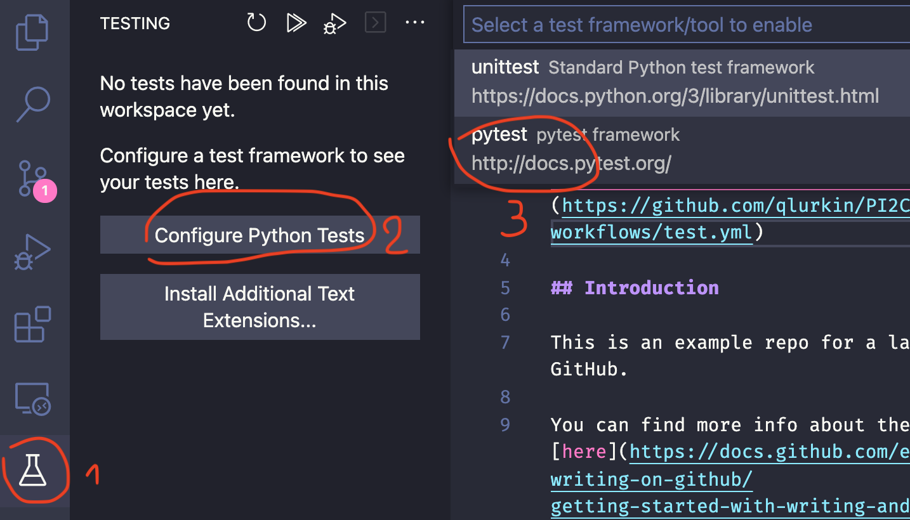

Le but de ce labo consiste à réaliser un projet simple qu'il faudra héberger sur la plateforme GitHub et ensuite tester à l'aide d'Actions GitHub. Voici l'adresse de Github : https://github.com/
L'idée consiste à produire un module qui va proposer plusieurs outils de
calculs mathématiques. On va donc devoir commencer par créer le module
Python composé de plusieurs fonctions de calcul. On s'assurera que ce
module est correct en écrivant des tests unitaires à l'aide de
pytest. On les fera ensuite s'exécuter avec des Actions
GitHub.
AdvancedPython2BA-Labo1
utils.py
Reprenez le fichier utils.py. Ajoutez-le dans votre dossier de travail et faites un premier commit
avec uniquement ce fichier ajouté, en mettant comme message "Initial
Commit". Comme vous l'aurez remarqué, ce fichier ne contient que des
fonctions non définies ainsi qu'un code principal qui permet d'exécuter ce
fichier.
Une fois ce premier commit fait, installez pytest si ce n'est
pas encore fait.
Créez un fichier de test pour ce module. Repartez pour cela du squelette
test_utils.py, et écrivez un test par fonction. Une fois cela fait, lancez les tests,
ils devraient tous échouer. Si cela fonctionne, créez un nouveau commit,
en mettant comme message "Add unit test for utils module".
Configurez l'exécution des tests dans VSCode

On va maintenant configurer l'Action GitHub. Pour cela, il faut ajouter un
dossier .github dans votre dépôt. Dans ce nouveau dossier
ajoutez un dossier workflows. Et dans ce dernier ajoutez le
fichier test.yml. Une fois cela fait, créez un nouveau commit avec comme message "Add
Action Configuration".
À ce stade, vous pourriez aussi avoir un dossier
__pycache__ qui a été créé dans votre dossier. Il ne faut
évidemment pas le maintenir dans le dépôt Git. On peut signaler à Git
qu'il faut l'ignorer en ajoutant un fichier
.gitignore (Attention à ne pas
oublier le "."). Ajoutez-le à votre dossier et créez un nouveau commit
avec comme message "Add .gitignore file".
Complétez maintenant toutes les fonctions de utils.py pour
faire passer tous les tests.
Dans cette section, vous allez apprendre à utiliser le débogueur intégré
de Visual Studio Code pour identifier et corriger
les 3 erreurs dans le code fourni.
Important : vous ne devez pas utiliser de print() pour
déboguer, uniquement l'outil de débogage de VSCode.
Téléchargez les fichiers main.py et
galaxy.py et ajoutez-les à votre
projet. Ces fichiers contiennent 3 bugs que vous devrez identifier et
corriger en utilisant le débogueur.
Pour utiliser le débogueur de Visual Studio Code :
eval qui permet
d'évaluer une expression Python.
scipy
contient des fonctions pouvant vous aider pour l'intégrale. N'oubliez
pas de mettre votre
requirements.txt à jour.
README.mdBon travail !